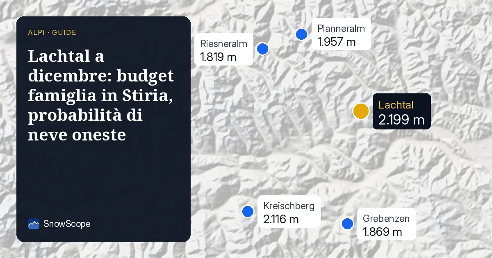

Lachtal a dicembre: budget famiglia in Stiria, probabilità di neve oneste
Lachtal applica 62 EUR per uno skipass giornaliero per adulti nella stagione 2026-27, e i bambini piccoli sciato gratis. La stazione si trova tra 1572 e 2199 m in Stiria, con 25 km di piste e 10 impianti adatti alle famiglie. Per dicembre, le prospettive di neve migliorano verso fine mese: a metà montagna (1885 m) la seconda metà registra 30 cm o più in circa sette inverni su dieci secondo i nostri dati storici.
Le previsioni neve in tempo reale per Lachtal nell'app SnowScopeAltezza neve, allerte powder e mappa 3D, gratis.
Quanto costa dicembre e cosa puoi evitare
Uno skipass giornaliero per adulti costa 62 EUR; un abbonamento di 6 giorni in inizio stagione costa 293,50 EUR. Il risparmio maggiore arriva se hai bambini: secondo il listino ufficiale, qualsiasi bambino nato nel 2021 o dopo (ora di 5 o 6 anni) ottiene uno skipass gratuito. Per una famiglia di due adulti e un bambino piccolo, una settimana intera diventa molto più economica di quanto pagheresti in una stazione più grande.
Il terreno è compatto: impianti piccoli, piste corte, quasi tutte facili e intermedie. Questo è perfetto per le famiglie che vogliono stare insieme e evitare una giornata intera in coda.


Profondità della neve su cui puoi contare a ogni quota
Lachtal si trova ad alta quota per questo angolo dell'Austria. Un tipico 15 dicembre mostra 30 cm alla base (1572 m), 46 cm a metà montagna (1885 m) e 58 cm in vetta (2199 m). Considerando i 46 inverni nei nostri dati, il terreno nudo non è mai apparso alla base il 15 dicembre.
La forma di dicembre conta più di quanto potresti pensare. Nelle settimane 1–7 e 8–14, solo il 54 % e il 63 % degli inverni registrano 30 cm o più a metà montagna. Dalla settimana 15–21, quella percentuale salta al 72 %. La settimana di Natale (22–28 dicembre) raggiunge il 78 %. Scegli le date giuste e avrai molte più probabilità di sciare su una base solida.
Come gli ultimi 15 inverni hanno cambiato il quadro
Il dicembre di Lachtal è diventato più magro. La profondità media della neve a metà montagna è scesa da 57 cm nei primi 15 inverni dei nostri dati a 33 cm negli ultimi 15 inverni (2011–12 a 2025–26). Alla base, la percentuale di settimane natalizie con 30 cm è crollata dall'80 % al 40 %.
L'inverno scorso (2025–26) ha sottolineato il rischio: a metà montagna c'erano solo 9 cm il 15 dicembre e 7 cm il 24 dicembre. Era abbastanza magra da richiedere una gestione accorta delle piste e neve scarsa su molti pendii.
Quando prenotare e quando restare flessibile
La prima settimana di dicembre è una scommessa qui: solo la metà dei nostri inverni ha 30 cm a metà montagna allora. La settimana prima di Natale e la settimana di Natale sono scommesse più sicure, con il 72 % e il 78 % di probabilità di buona profondità. Se puoi prenotare tardi e cancellare gratis, fallo. Aspetta che la previsione si stabilizzi, controlla la mappa della neve l'1 o 2 dicembre, e decidi allora.
Se devi prenotare mesi prima, punta al 15–28 dicembre. Se non hai scelta se non il primo dicembre, prepara un piano B: o una catena montuosa più alta a nord o la volontà di sciare su neve magra su piste ben curate.
Turracher Höhe: vicina, ma non meglio per dicembre
A sud-ovest di Lachtal si trova Turracher Höhe, un'altra piccola stazione tra la Stiria e la Carinzia. Si trova a quota inferiore e riceve meno neve a dicembre: un tipico 15 dicembre ha 23 cm a metà montagna (1792 m), e solo il 39 % degli inverni registra 30 cm nelle settimane di metà dicembre. Lo skipass giornaliero costa 72,50 EUR e l'abbonamento di 6 giorni in inizio stagione 353 EUR, entrambi più alti di Lachtal.
Quindi se vuoi una vacanza familiare a dicembre con budget stretto, Lachtal è sia più conveniente che più nevoso. La scelta non è tra questi due piccoli impianti, ma se prenotare un piccolo impianto in dicembre che si assottiglia, o spingersi a nord e in quota dove le prospettive sono migliori.
Consigli per sciatori
- Porta la prova dell'età per i bambini: qualsiasi bambino nato nel 2021 o dopo ottiene uno skipass gratuito. Questo conta più di qualsiasi sconto per adulti qui.
- Evita la prima settimana di dicembre a meno che la previsione non sia insolitamente buona. Prenota per il 15–28 dicembre, quando il 70 % degli inverni ha una base solida.
- Se devi prenotare settimane prima, scegli un pacchetto che puoi cancellare senza costi. Decidi per inizio dicembre quando la previsione di neve diventa più chiara.
- Per sci fuori pista o couloir dopo neve fresca, controlla prima il bollettino valanghe ufficiale della Stiria su lawinen.report.
- Se a metà montagna sembra nudo per inizio dicembre, passa a una stazione più alta piuttosto che sperare che le condizioni migliorino.
Su questi numeri
Le altezze neve delle località sono la neve più alta sui pendii superiori alla data indicata; sono stime per un'area, non una misura in un punto. Le previsioni possono cambiare. Leggi sempre il bollettino valanghe ufficiale prima del fuoripista.
Bollettini valanghe ufficiali: Lawinenwarndienst Steiermark
Cita questo articolo
Per ricerca, didattica o stampa: numeri e grafici sono liberamente riutilizzabili con licenza CC BY 4.0 citando così.
SnowScope (2026), Lachtal a dicembre: budget famiglia in Stiria, probabilità di neve oneste, https://snowscope.app/blog/it/2026/11/lachtal-december-ski-styria-budget-snow.html, consultato il 2026-11-14
SnowScope (Atlas Labs). (2026, November 14). Lachtal a dicembre: budget famiglia in Stiria, probabilità di neve oneste. SnowScope snow reports. https://snowscope.app/blog/it/2026/11/lachtal-december-ski-styria-budget-snow.html
BibTeX
@misc{snowscope2026lachtaldecemberskistyria,
author = {{SnowScope (Atlas Labs)}},
title = {Lachtal a dicembre: budget famiglia in Stiria, probabilità di neve oneste},
year = {2026},
month = nov,
howpublished = {\url{https://snowscope.app/blog/it/2026/11/lachtal-december-ski-styria-budget-snow.html}},
note = {Published 2026-11-14 17:24 UTC; accessed 2026-11-14}
}· CC BY 4.0 · Metodi, dati e strumenti →
Lachtal: neve e temperatura per quota, quest'inverno vs lo scorso (strumenti) →
Segui Lachtal
Gratis: un messaggio quando arriva la neve e il meteo ogni mattina.